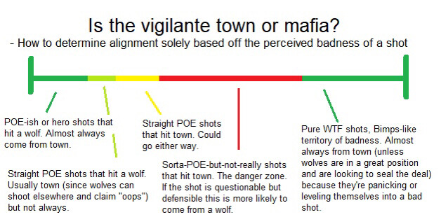

I’m broke
I don’t know what this means
no money looser
2 Likes
I don’t know why I’m being informed of this but okay
Anyway, what’s the case on me? Are we still caught up on my claim?
Town
This Probabaly isn’t usefull for a multitude of reasons
'Twas a joke
Right now, the biggest question is still why you claimed while the wagon for whoever-we-lynched-yesterday (can’t remember the name; think it started with a G) was rollin big time, wanted to off yourself yesterday and not today, etc. Generally, why it looks like you want to save G-Man and kill yourself (until G-Man is dead, and then your additional params for BP makes the whole claim look really sketch).
Yeah, I mean, that’s fair, and I’m no doubt going to get flamed for trying to kill myself over a wolf but that’s omegalul reasoning no matter what because if I do die there everyone is going to think I was just trying to protect gorta anyway so I wouldn’t be protecting shit
Considering Chloe was voting me I assume she came to the conclusion that he pirated me? Because that’s a no :finger_guns:
No idea
i mean i actually think he coulda pirated Night because the Tracker Miller claim is a giant ‘wtf’ and oddly specific, especially when multiple cop-types exist but seemingly only a single tracker (and even then, its conditional)
like if she knew the outcome of the duel thus figured out she was tracked (or just used basic reasoning lol)
so if someone has dead interaction, or can revive cheese, or something along those lines, cheese’s check is no longer as incriminating
overall it ends up being a giant ball of wifom and mechanical shit that im Not Good at reading into, but
yeah
Did anyone ever find the “AI vig chart”?
Cause I’m remembering now that Marl claimed he could see who whoever got his gun shot and that’s making me a bit iffy on Appel

5 Likes
We don’t have Derps’ flip so
This is true
If I were pirated I would have claimed it as soon as cheese flipped probably
wolves are appel/YBW/night/light
h
bye forever
and by forever I mean until tomorrow
3 Likes
nightlight
1 Like